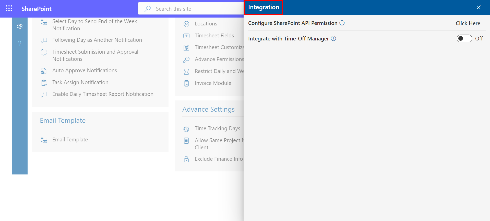
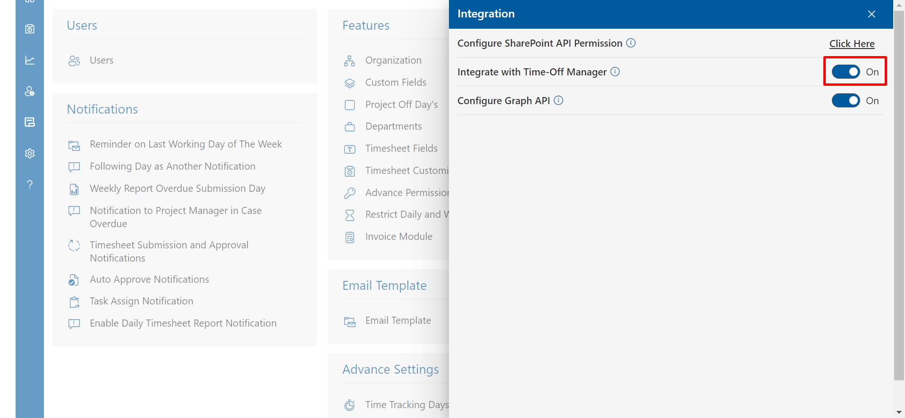
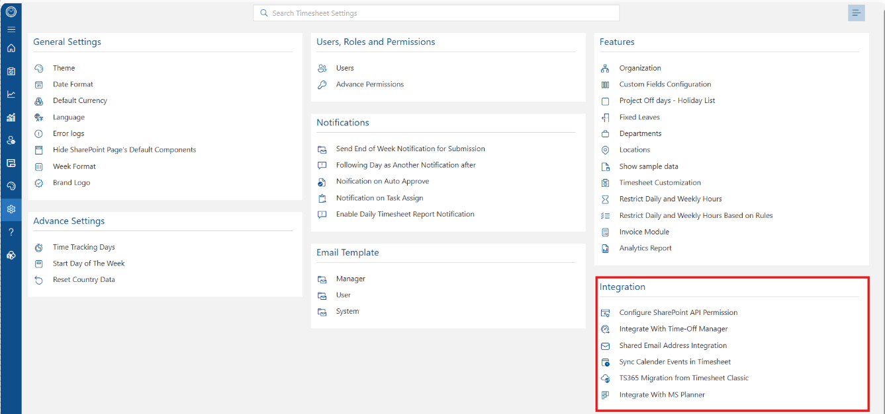
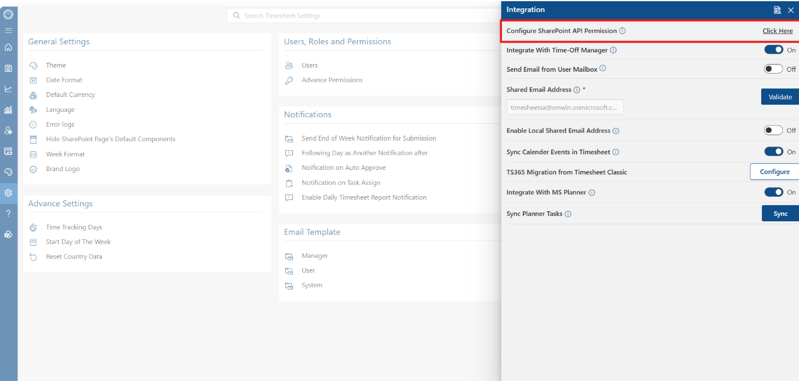
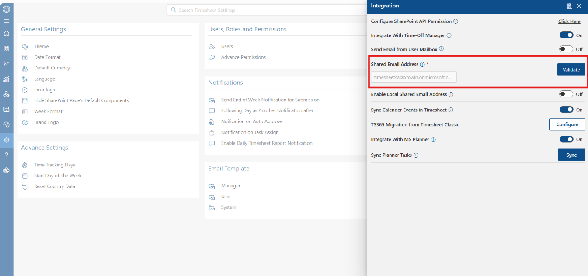
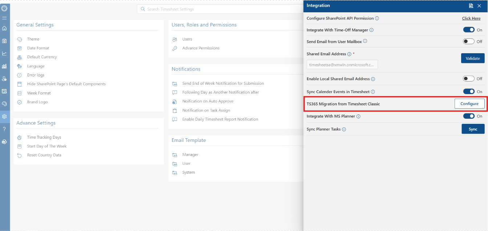
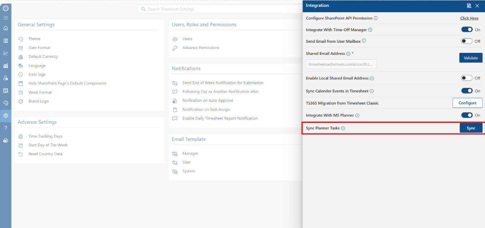

Intregration
From here you can Integrate Timesheet application with other application.

Integrate with Time-Off Manager
By enabling this toggle, you can integrate the "Time Off Manager" app, which should be installed on the same site.

Integration Settings Guide
Integration settings allow administrators to seamlessly connect Timesheet 365 with various Microsoft 365 services and external tools. Configuring these settings helps automate notification delivery, synchronize schedule calendars, migrate legacy data, and import external tasks directly into timesheets.
Accessing Integration Settings
To navigate to these options, open the application settings menu and select Integration under the core settings dashboard. This opens the central Integration side panel containing all supported connector options.

API Permissions & External Modules
1. Configure SharePoint API Permission
Clicking Click Here adjacent to Configure SharePoint API Permission grants the application necessary authorization to interact with Microsoft 365 tenant resources. Enabling these permissions ensures smooth cross-platform communication and secure data exchange across integrated SharePoint sites.

2. Integrate With Time-Off Manager
Activating Integrate With Time-Off Manager synchronizes approved leave schedules directly into Timesheet 365. Automatically importing absence records prevents users from accidentally logging working hours during active leave windows, simplifying attendance tracking.
Email & Messaging Integrations
1. Send Email from User Mailbox
When the Send Email from User Mailbox toggle is turned on, automated system notifications are sent directly from the initiating user's personal mailbox rather than a generic system address. This provides personalized communication and improves recipient response rates.
2. Shared Email Address
The Shared Email Address field defines a centralized Microsoft 365 shared mailbox used to dispatch standard notification emails. Clicking Validate checks mailbox credentials and delivery permissions prior to saving the configuration.

3. Enable Local Shared Email Address
Enabling Enable Local Shared Email Address redirects automated system communications through a locally managed shared mail account. This setting is designed for organizations operating custom or hybrid email infrastructure environments.
Calendar, Migration & Task Synchronization
1. Sync Calendar Events in Timesheet
The Sync Calendar Events in Timesheet option integrates Outlook calendar appointments straight into the user's weekly timesheet interface. Employees can reference scheduled meetings and events in real time while filling out their daily entries.
2. TS365 Migration from Timesheet Classic
Selecting Configure next to TS365 Migration from Timesheet Classic launches the data migration utility. This tool transfers historical timesheet data and configurations from older platform versions, avoiding tedious manual setup.

3. Integrate With MS Planner
Toggling Integrate With MS Planner connects Microsoft Planner plans directly to Timesheet 365. Linking these systems allows project tasks created in Planner to be made available for time logging inside timesheets.
4. Sync Planner Tasks
Clicking Sync triggers an immediate manual refresh of assigned Microsoft Planner tasks. Performing this synchronization ensures that newly assigned Planner items appear right away in user task dropdowns.
